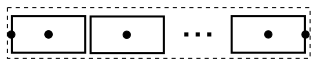

relNodePositionsReturn vector of relative node positions (0..1) |
|
Information
This information is part of the Modelica Standard Library maintained by the Modelica Association.
Syntax
Vectors.relNodePositions(nNodes);
Description
The function call "relNodePositions(nNodes)" returns a vector
with the relative positions of the nodes of a discretized pipe with nNodes nodes (including the node
at the left and at the right side of the pipe), see next figure:

Example
Real xsi[7];
algorithm
xsi = relNodePositions(7); // xsi = {0, 0.1, 0.3, 0.5, 0.7, 0.9, 1}
See also
Syntax
xsi = relNodePositions(nNodes)
Inputs (1)
| nNodes |
Type: Integer Description: Number of nodes (including node at left and right position) |
|---|
Outputs (1)
| xsi |
Type: Real[nNodes] Description: Relative node positions |
|---|